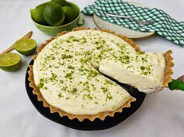

Torta de limão
Ingredientes
Massa
- 200 gramas de biscoito tipo maisena triturado
- 2 colheres de sopa de margarina ou manteiga
- Ingredientes
- Recheio
- 200 gramas ou 1 caixinha de creme de leite
- 395 gramas ou 1 lata de leite condensado
- Suco de 3 limões
- Raspas de limão para decorar
- 2 claras
- Açúcar o quanto baste
Modo de Preparo
Massa
- Triture os biscoitos de maisena com um rolo de massa ou no processador.
- Em seguida, transfira para uma tigela e acrescente 2 colheres de sopa de manteiga.
- Misture até ficar com textura de areia molhada.
- Transfira a massa para uma forma redonda.
- Pressione e cubra o fundo e as laterais da forma.
- Leve para assar em forno preaquecido a 180 graus Celsius por 10 minutos.
- Retire do forno e despeje o recheio de limão.
- Leve para assar por mais 10 minutos.
- Espere esfriar e leve à geladeira por 4 horas antes de servir.
- Bata as claras com açúcar, coloque por cima da torta e finalize com raspas de limão.